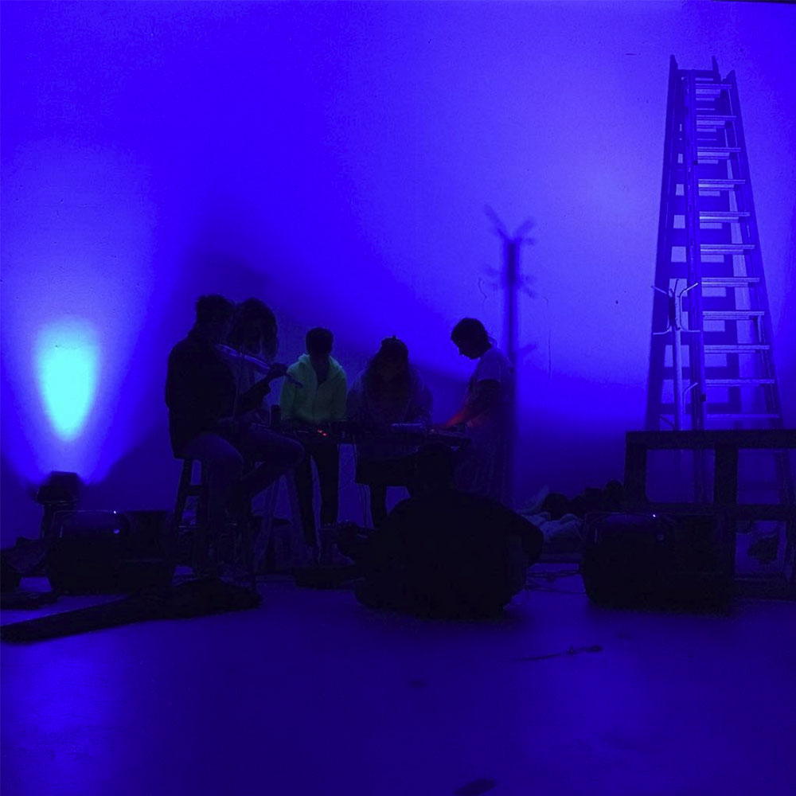
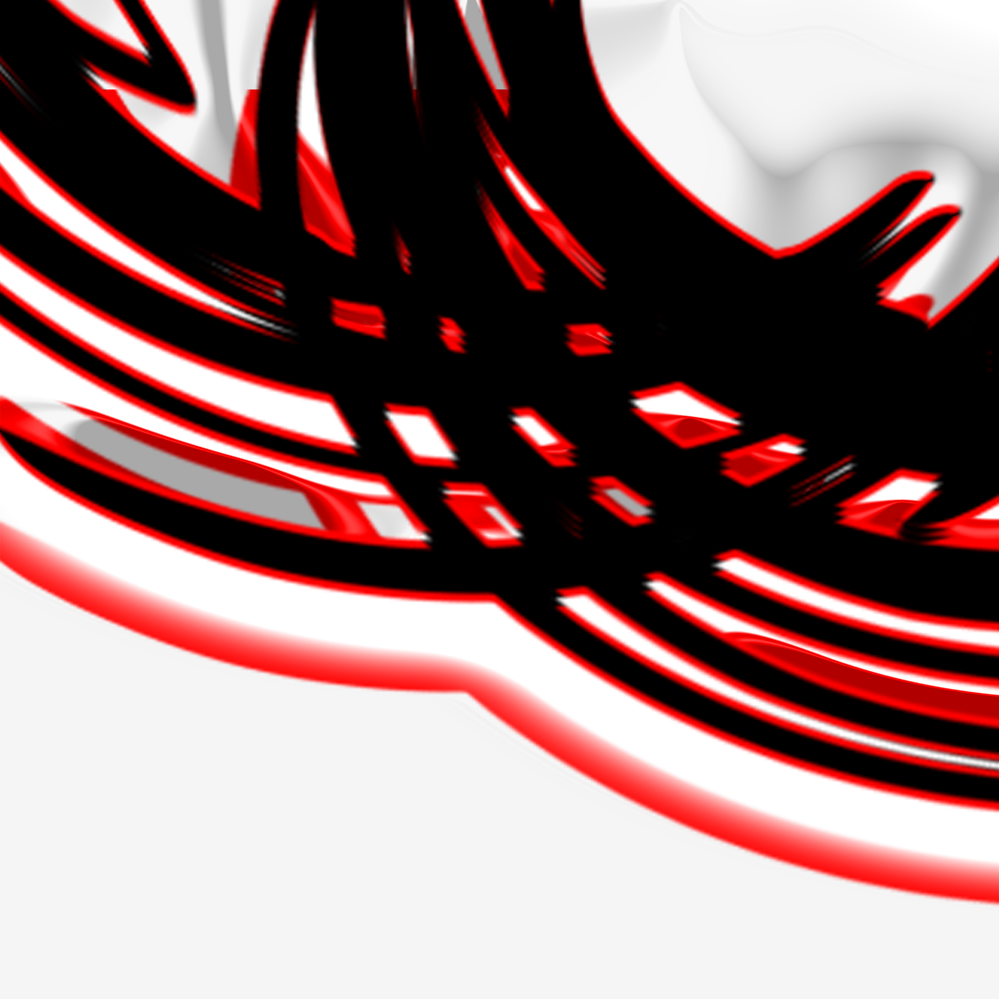
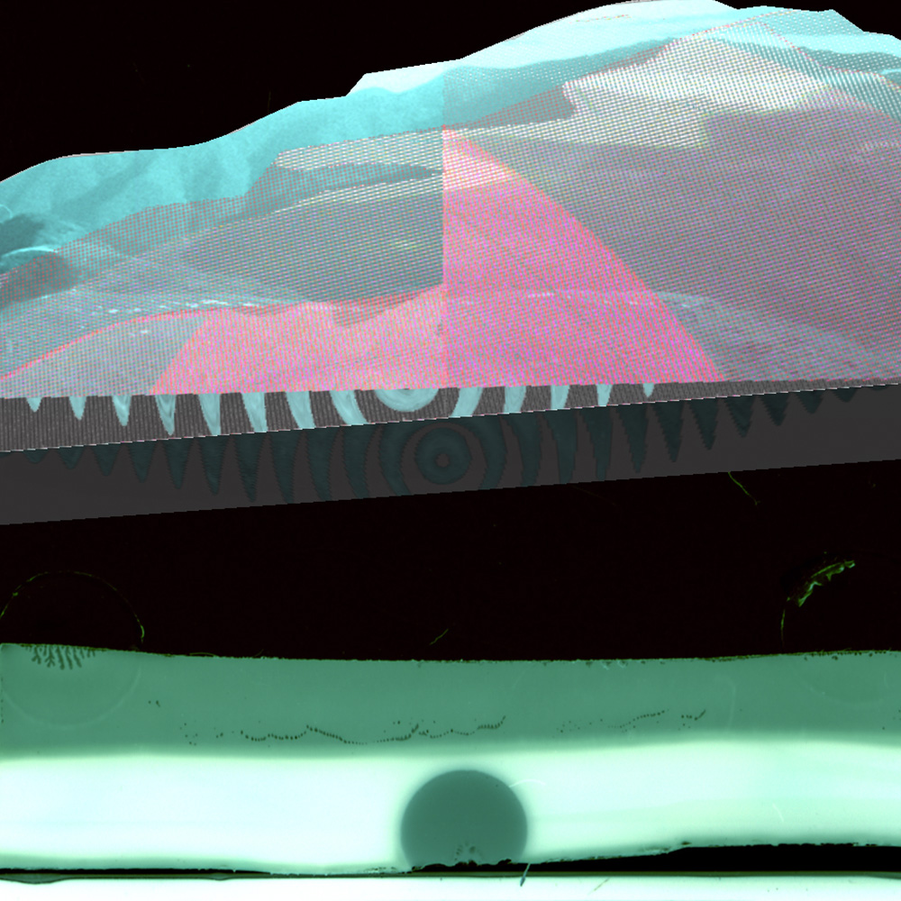
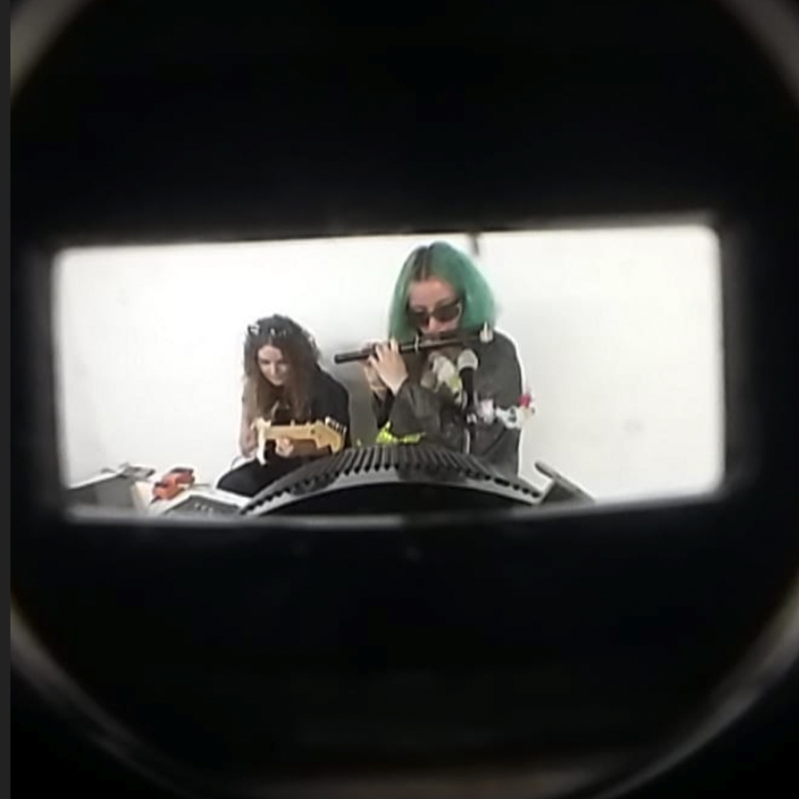
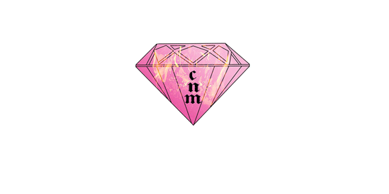
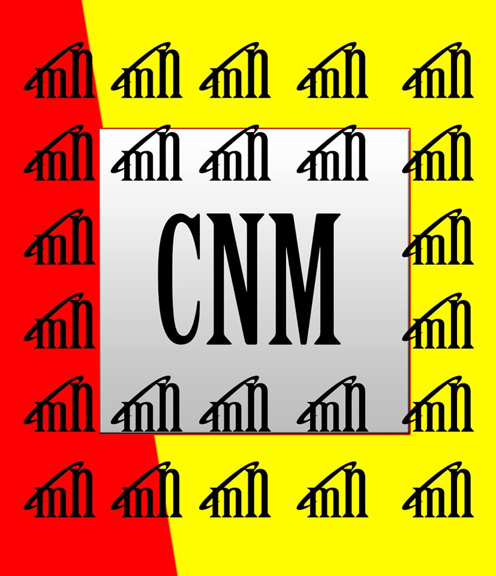
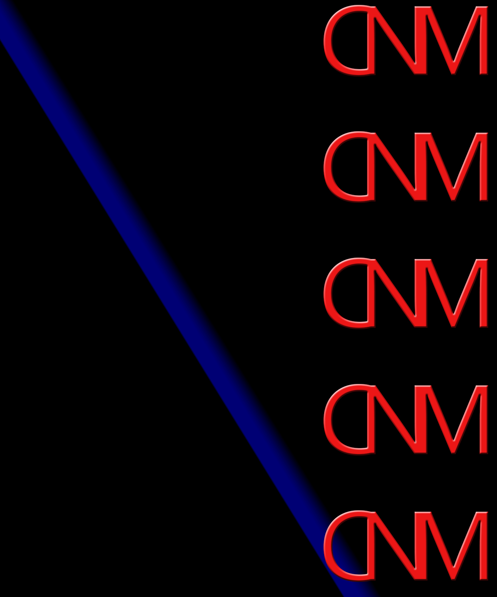
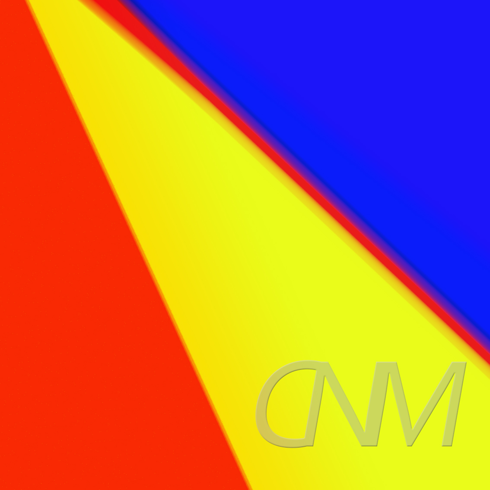
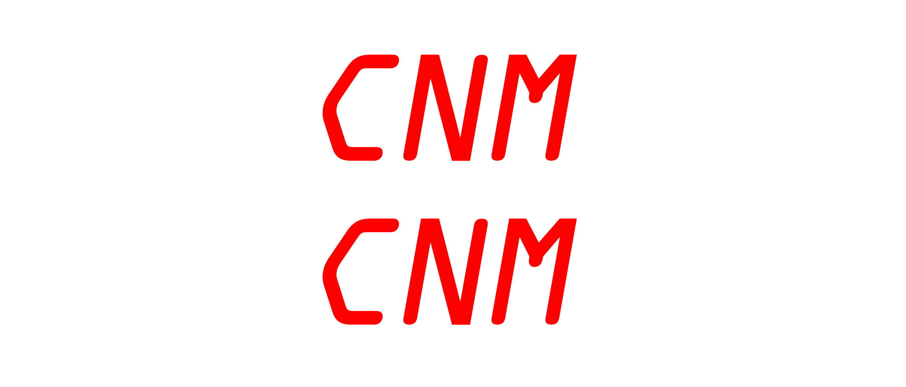

The Form Of The Techno
Fluide & Bones
Kranke Atmung
About The Last Night
Liebe Und Freiheit
Liquid Forms
Emergency
Orange et Bleu
Movies
Girl Square
Feat.
IMG PEOPLE
Friends Of Character
Exhibitions Views
UNICREAM (Portfolio)
About
CV
Gazwerk, 2020, editing: Julia Castel, interview: Anna Bresoli, playlist: Charlène Levasseur, A5, Rummelsbourg, Berlin


Midnight Fantasy Entertainment, Night Nurse, 2019, 1st erotic visual concept with @linbeliz, Toulouse, France
Podcasts of Turkish music taken from films of the 70's. Night Nurse with theses K7, she puts itself in the palm of your hands so that it can complete your collection
More about: click


Transflux, 2019, Festival Lgbtqi+ with genre2030 and Hervé Senant, isdaT Toulouse, France
Documentaries, video art, comedies, dramas, thrillers, blockbusters, turnips, series, the research group Genre2030 is organizing a film festival. Genre2030 refers to a notion that is now as essential in art as it is in the humanities and points towards the future. Genre2030 is an isdaT research program where artists, students, theorists meet to look for "how to create a world in which those who define their gender and desire as non-normative can live and flourish without the external threat of violence and without the pervasive sense of their unreality." Judith Butler. Trans : expresses the crossing of a boundary, Flux the idea of life forces flowing freely. TransfluX offers the opportunity to share 15 films among an infinite number of other possibilities that testify to so many singular ways of living. the notion of gender and to say, against all norms, the increasing fluidity of our experiences, of our identities, always in progress. TransfluX: a selection to share with popcorn and hot dogs until the end of the night
With the participation of Clementine Campredon, Levasseur Charlène, Brossard Estelle, Melon Sarah, Litière Maxime, Criseo Margot, Decoudray Milena, La Rosa Marine, Elmaleh, Lucie Semi Btehya, Debaisieux Margot, Alaves Morgane, Braque Julie, Clair Maurine, Cazdu Eli, Dubedat Simon, Maugeias Chloe, Sabykine Macha, Chalte Guillaume, Ravary Steven, Negre Laura, Picotin David, Mangeais Cloe

Roven, 2019, article about paintings and drawings, Paris, France

24 Carats, 2019, live Sojbdor + Orque, EnsAD, Paris, France

HIER + JETZT : CONNECTIONS, 2019, 3:00 video montage: New York by Charlène Levasseur in Poetry Corridor ǁ, curated by Lea Lascaud, KIT: Exhibition Space, artist run space, Toulouse, France
Following a call for projects to collect poems or texts from the public around the theme of borders, whatever they may be, texts will be to be discovered in the corridor of the apartment
More about: clik


Ich?… et la photocopieuse !, 2019 report from a workshop with Klaus Merkel + Amandine Rué + Emmanuelle Castellan posters 400 x 200 cm, Painting Room, isdaT Toulouse, France
More about: clik

Eglusha + CessFess, 2019, exhibition curated by Julia Castel, live Sojbdor + Orque, djs set: Mr Boom, Kuten, Sasso, Guigui and Deena Abdelwahed, exhibition of Julia Castel, Curupira, artist run space, Toulouse, France

Acolora Show #4 - sojbdor, sync_system, 2019, 1:58:02, dj set on UDON radio, Paris, France

Before: dark ambient, 2019, live with Orque, Spatiosselet, Ïoa, Patrice Gogue 2:00:00, 104, Toulouse, France

A4, 2019, digital art, L'Annexe, Paris, France

Keygen Lost, 2019, music: 15:44 ask to listen
Music: Sojbdor + Orque
Artwork: Sojbdor

Liquid Metal, 2019, music: 12:15 improv for extreme scientists in the midst of discovering a steel chromosome
Music: Sojbdor + Orque
Artwork: Sojbdor

Eglusha + CessFess, 2019, curated by Lea Lascaud, live and exhibition of CessFess, KIT: Exhibition Space, artist run space, Toulouse, France

Before: ?, 2019, live with Orque 2:00:00, 104, Toulouse, France

Before: Winter Is Not Over, 2019, live with Orque 1:45:00, Cours Aux Pigeons, Toulouse, France


Piece Montee, 2019, curated by Jean Pierre Castex and Patric Mellet, Le Musée des Augustins, Toulouse, France

Night Nurse Episode 7 - Night Nurse invites Orque + Sojbdor, 2019 live on CampusFM radio, 57:43, Toulouse, France

Before: ?, 2019, live, Cours Labbé, Toulouse, France

Before: Si T'En Peux Plus Mais Que T'En Peux Quand Même Encore, 2019, live, 1:45:00, with Orque, Cours Labbé, Toulouse, France


Fictions Primitives, 2018, report from a workshop with César Vayssié, 02, isdaT Toulouse, France More about: clik
Music: Sojbdor, video: Yves Bartlett, degraded: Ilyess El Habchi, 6:24, 2018

L'Ombre De La Mouche, 2018, live, 58:00, invited by Clement Chalm with Orque on Radio Nebuleuse, Toulouse, France


Apotheose, 2018, with ACOLORA, curated by Aparte, dj set, club, Le Cri de la Mouette, Toulouse, France

Laresparc Before After, 2018, with Clément Chalm, Patrice Gogue, live, club, Forbiden Zone, Toulouse, France





CNM, 2018, with Emmanuelle Pozzo, Nadia Mazzega, concept, Toulouse, France

Sound Art As A Listening Practice, 2017, Report from a workshop With Luis Nacenta, installation of speakers, La Galerie D'Essai, isdaT Toulouse, France
More about: clik

Laress Party, 2017, with TT, Illyes El Habchi, Kubu, Victor Duzelier, Beco Beurre, Yves Bartlett, Oranj, Jan Loup, live, dj set, Secret Place, Toulouse, France

Laress Before, 2016, with Victor Duzelier, Yves Bartlett, Sojbdor, 110, isdaT Toulouse, France
Music: Sojbdor, video: Emmanuelle Pozzo, 2:17, 2016
Music: Sojbdor, video: Emmanuelle Pozzo, 2:20, 2016

Automatic Machine, 2016, report from a workshop with Gaëlle Sandre, 110, isdaT, Toulouse, France
More about: clik